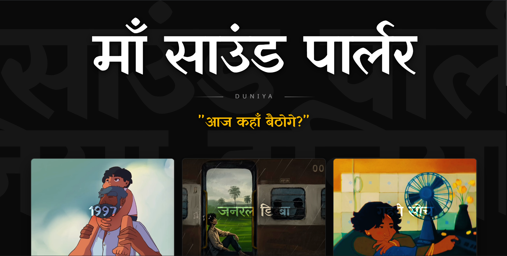

Maa Sound Parlor

Tech Stack
Frontend
Styling & UI
Animation
Backend & Database
Media
Overview
Maa Sound Parlor is a modern devotional and spiritual web platform designed to provide an immersive experience for exploring devotional music, videos, and spiritual content through a clean and interactive interface.
The Problem
Devotional audio and video content is often scattered across different platforms, making it difficult for users to discover and enjoy meaningful spiritual content in one focused environment. A dedicated platform can provide a simpler, more immersive, and organized experience.
The Solution
Maa Sound Parlor brings devotional content together in a modern web experience with interactive navigation, media integration, smooth animations, and a responsive interface that makes spiritual content easy and enjoyable to explore across devices.
Key Features
• Immersive devotional interface.
• Audio and video content integration.
• YouTube media integration.
• Smooth animations and transitions.
• Responsive design.
• Real-time data capabilities.
• Modern and intuitive navigation.
Development Process
Built using Next.js 16 and TypeScript with a modern component-based architecture. Tailwind CSS v4 was used for responsive styling, while Framer Motion provides smooth animations and transitions. Supabase handles database and realtime functionality, and React YouTube integrates video content.
Challenges
One of the main challenges was creating an immersive devotional experience while keeping the interface simple and responsive. Integrating media content, realtime data, smooth animations, and responsive layouts required careful planning to maintain both performance and usability.
What I Learned
This project strengthened my understanding of Next.js App Router, TypeScript, Supabase, realtime data, responsive UI development, media integration, and animation-driven user experiences. It also improved my ability to combine technical functionality with a strong visual and interactive design.
Future Improvements
Future versions could include personalized devotional collections, improved content discovery, additional realtime features, notifications, user preferences, and a dedicated mobile application.